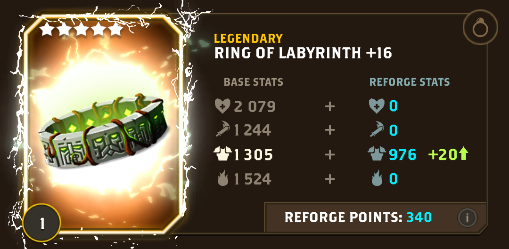
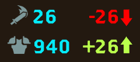
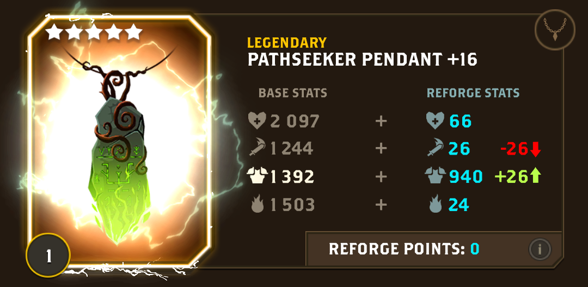
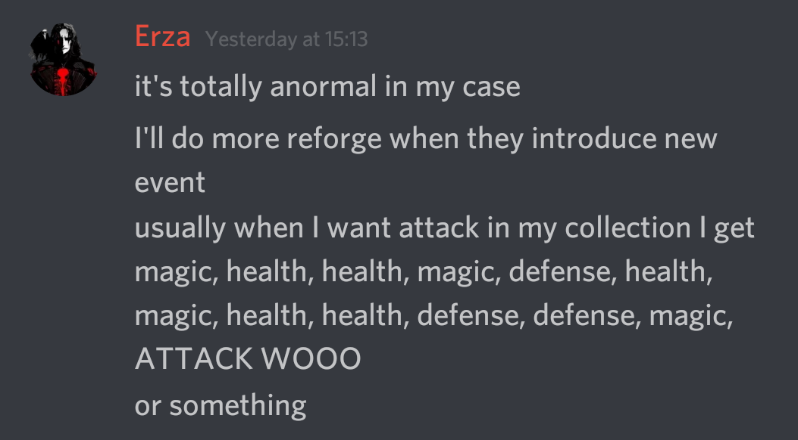
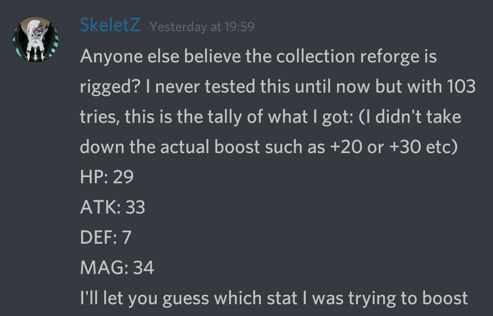

Reforging mistakes
Reforge Guild
Common mistake among Questland players during reforge is when they are trying to keep unwanted stats on zero while having lots of unused reforge points.
click on image to see full size
Too expensive
When you press the
reforge button, one of 2 things happen:
Case 1: You have one of the stats increased
Case 2: You have one of the stats decreased and one of the stats increased

When you just start reforging item from scratch, case 1 has 100% probability.
When you've already reforged about 30% of item's reforge points,
case 2 is much more probable (~ 90%).
So, game requires one stat to be decreased.
If you have all unwanted stats at zero, which stat game will chose to decrease?
Correct! The only one positive left, the stat you're trying to maximize!
Much cheaper
So, the strategy is to keep unwanted stats not at zero, but at 20-40 points each.
Probability for non-initial reforge:
- 10% of having case 1 scenario
- 25% your target stat is increased (if case 1)
- 90% of having case 2 scenario
- 75% your non-target stat is decreased (if case 2 and all stats non-zero)
- 33.3% your target stat is increased after one of non-target stats was decreased (if case 2)
When all non-zero stats: (1/10 * 1/4) + (9/10 * 3/4 * 1/3) =
25% chance of your target stat being increased
When unwanted stats all zero: (1/10 * 1/4) + (9/10 *
0/4 * 1/3) =
2,5% chance of your target stat being increased
 
{kind=link}
{kind=link}